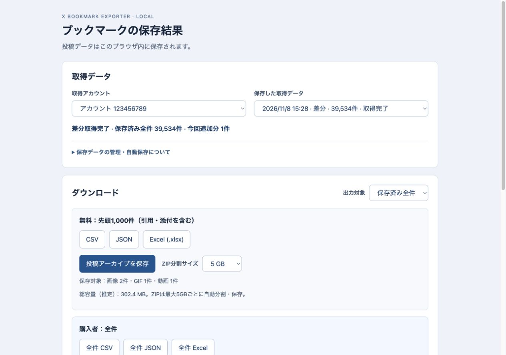

Xブックマークエクスポーター
Xのブックマークを、手元のアーカイブへ。
あとで読みたい投稿を、引用や添付メディアと一緒に保存。ブラウザ内の取得履歴から、CSV・JSON・Excelやオフラインで読める投稿アーカイブを作れます。

投稿も、画像も、動画も。
- CSV・JSON・Excelで投稿を保存。引用・再投稿を含む詳細は、アーカイブのarchive.jsonに保持します。
- 画像・GIF・動画をZIPへ保存。動画とGIFは応答に含まれるMP4から選び、GIFもMP4形式で保存します。
- 添付はmedia/作者ID/配下へ整理します。作者IDには投稿者のユーザー名を使い、不明な場合は数値IDから区別できるフォルダを作ります。引用・再投稿も本来の作者ごとです。
- 保存先フォルダを一度選択すると、既定5GB、1〜50GBの指定サイズごとに独立したZIPを自動分割・保存します。指定サイズを超える単一メディアは失敗一覧へ記録します。必要に応じて分割サイズを上げて再保存してください。
- 全ZIPを同じフォルダへ展開し、index.htmlを開けば、本文・引用・画像・MP4をオフラインで閲覧できます。
取得履歴から、必要な分を。
拡張の開始ボタンから取得し、ページごとにブラウザ内へ自動保存します。取得中はXタブを開いたままにしてください。取得後は画面を閉じても、保存済みデータを一覧から再利用できます。
アカウントごとに履歴を分け、全件取得と差分取得を選択できます。差分取得は購入者向けで、同じアカウントの確認済み取得履歴を基準に、既知の境界まで追加分を照合します。出力は「今回追加分」「保存済み全件」を選べます。
データ同期は行いません。保存済み全件は累積アーカイブで、X上の削除とは同期しません。過去位置の変更を確認したい場合は全件取得を利用してください。
無料で1,000投稿。全件保存は買い切り。
各取得データの先頭1,000件の投稿と、その引用・添付を無料で保存できます。取得データ自体はブラウザ内に残ります。全件保存と差分取得はUSD3.99の買い切り購入で利用できます。
購入前の認証と購入権限の復元には、メール確認コードを使います。お支払いはStripeの決済画面で行います。別のPCでも同じメールで購入権限を復元できます。取得した投稿データは別PCへ同期されません。
手元に保存する、非公式ツールです。
Xの公式製品ではなく、Xとの提携はありません。取得できるのはXが返す範囲です。削除済み・閲覧できない投稿や、すべての過去投稿の取得を保証するものではありません。
投稿データはブラウザ内と利用者の保存先で扱います。購入・復元時にはメール・認証・決済情報を外部サービスへ送信します。詳しくはプライバシーポリシーをご確認ください。
サポートとプライバシー
運営者：横田裕市